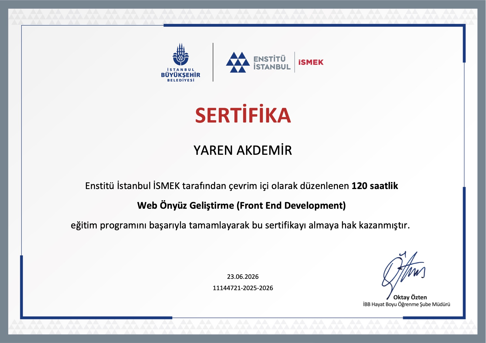
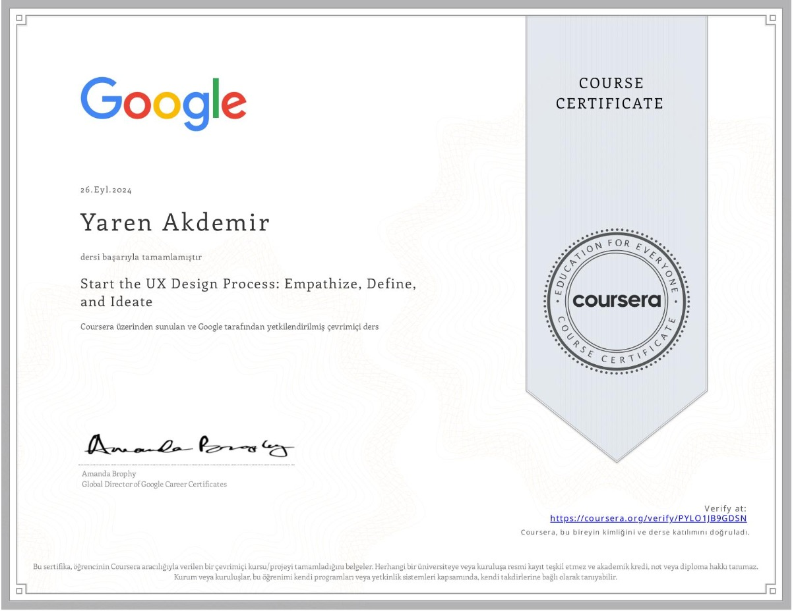

My Page
2026Web Design / Front-End Development
I have a lot of hobbies, and I wanted one place that could hold all of them. So I designed and coded this website myself to bring my work in code, film, photography, drawing and acting together.
I believe I make a good front-end developer because I start with people, not with code. Before I design anything, I take the time to understand what someone really needs and who they are. Then I build something that fits them: original, clear and easy to use.
My background supports both sides of the job. As a computer engineer, I can build what I design. My UX training taught me to understand users before drawing a single screen, and my work as a test engineer taught me to notice the small details that break an experience. Years of filmmaking, photography and drawing gave me an eye for composition, colour and rhythm.
Web Design / Front-End Development
I have a lot of hobbies, and I wanted one place that could hold all of them. So I designed and coded this website myself to bring my work in code, film, photography, drawing and acting together.
Front-End Practice
The repository where I practise and keep what I build while learning HTML, CSS and JavaScript.

Enstitü İstanbul İSMEK
June 2026 — 120 hours
A 120-hour online training programme in front-end web development, run by Enstitü İstanbul İSMEK (Istanbul Metropolitan Municipality). I worked through the fundamentals of building web interfaces — structuring pages, styling and layout, and adding interaction — and completed the programme successfully.
Google — Coursera
September 2024
The first course of the Google UX Design Certificate. I learned the core ideas behind user-centred design: what a UX designer does, how the design thinking process works, why accessibility and equity matter, and how design sprints are planned and run.

Google — Coursera
September 2024
The second course of the Google UX Design Certificate. I practised the first stages of a real design process: researching users and building empathy maps, personas, user stories and journey maps, writing problem statements, and generating ideas through competitive audits and quick sketching.
B.Sc. Computer Engineering
2020 — 2024
A four-year programme that gave me a strong foundation in software development, algorithmic thinking, system design, databases and networking, with project-based courses including summer training and web and mobile application development.
The code for my projects lives on GitHub.